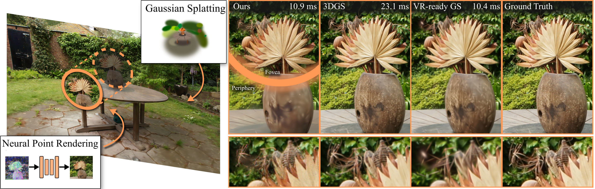
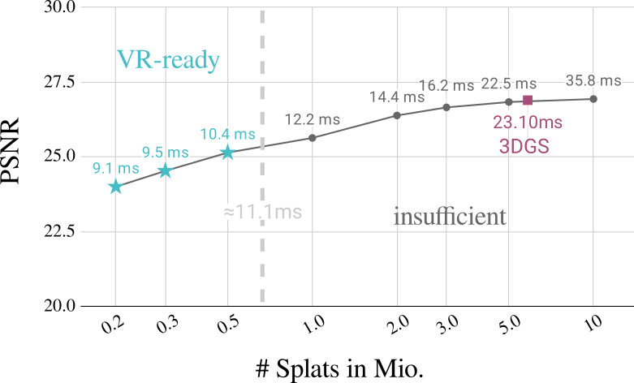
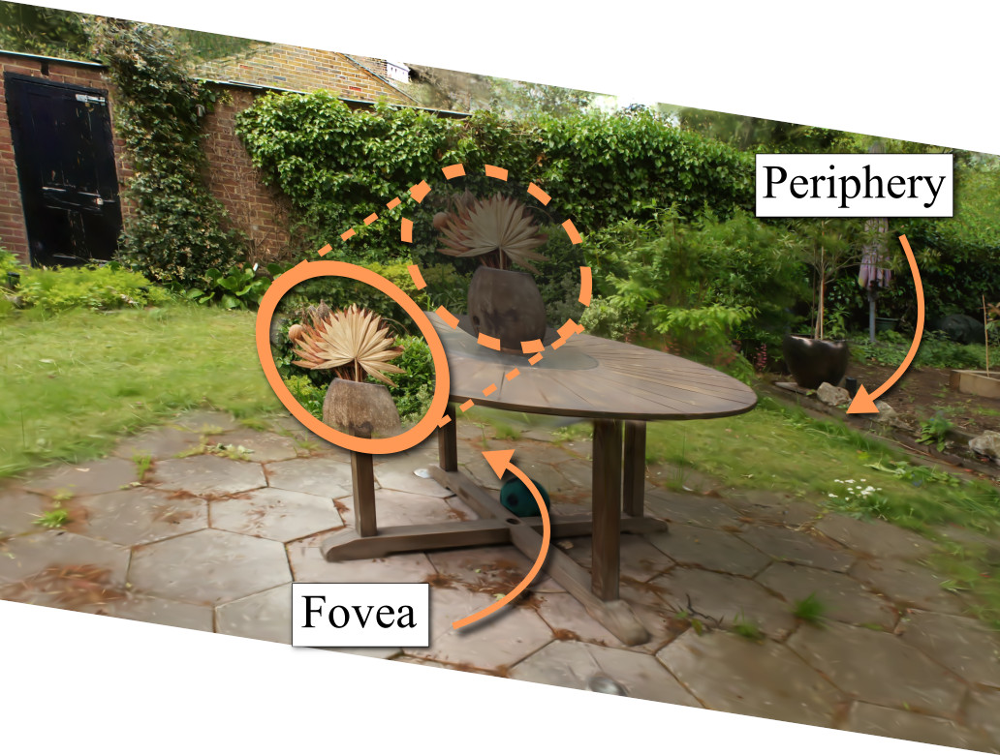
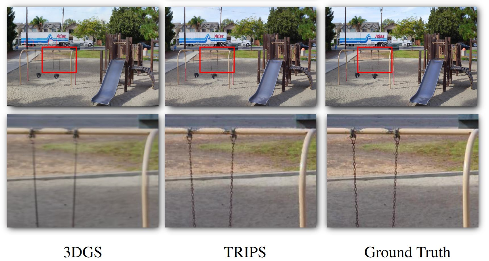
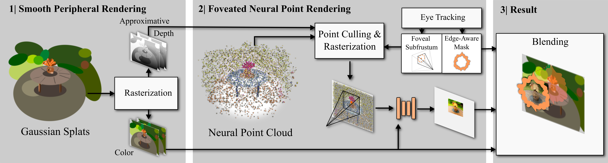
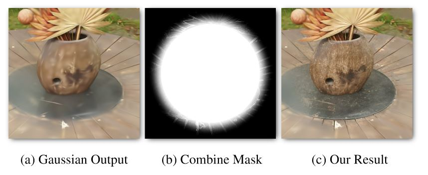
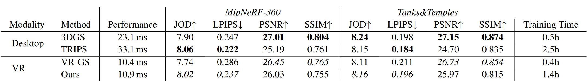

VR-Splatting: Foveated Radiance Field Rendering via 3D Gaussian Splatting and Neural Points ArXiv
-
Linus Franke
FAU Erlangen-Nürnberg
-
Laura Fink
FAU Erlangen-Nürnberg
-
Marc Stamminger
FAU Erlangen-Nürnberg

Key Insights
for Gaussian splatting [Kerbl and Kopanas et al. 2023] based VR rendering:
- VR requires very high (90Hz) framerates, thus only low number of Gaussians are possible as performance decreases with number of primitives.
- Popping artifacts are distracting in VR, as such costly per-pixel correct sorting of Gaussians is required, limiting number of Gaussians even further.
- Such Gaussian reconstructions are low-detail and smoothed, which makes them perfect for peripheral rendering in foveated rendering.
- We can employ rendering modes such as neural points requiring convolutional neural network evaluation (scaling cost per pixel) for the very small foveal region.
Teaser: Foveated rendering (red fixation point) with neural points, periphery with low amounts of Gaussians. Resolution of 2016x2240 per eye.
Abstract
Recent advances in novel view synthesis (NVS), particularly neural radiance fields (NeRF) and Gaussian splatting (3DGS), have demonstrated impressive results in photorealistic scene rendering. These techniques hold great potential for applications in virtual tourism and teleportation, where immersive realism is crucial. However, the high-performance demands of virtual reality (VR) systems present challenges in directly utilizing even such fast-to-render scene representations like 3DGS due to latency and computational constraints.
In this paper, we propose foveated rendering as a promising solution to these obstacles. We analyze state-of-the-art NVS methods with respect to their rendering performance and compatibility with the human visual system. Our approach introduces a novel foveated rendering approach for Virtual Reality, that leverages the sharp, detailed output of neural point rendering for the foveal region, fused with a smooth rendering of 3DGS for the peripheral vision.
Our evaluation confirms that perceived sharpness and detail-richness are increased by our approach compared to a standard VR-ready 3DGS configuration. Our system meets the necessary performance requirements for real-time VR interactions, ultimately enhancing the user's immersive experience.Motivation
Gaussian rendering times increase drastically with number of splats, making full 3D Gaussian Splatting in VR difficult.

Thus for efficient rendering, we want a foveated approach, where looked-at areas are rendered in high quality and peripheral areas have lower rendering quality.
The periphery is sensitive to flickering. Gaussians however are inherently smooth, even at low primitive counts, making Gaussians perfect for peripheral rendering.

In the small time budget for the fovea, we can use neural point rendering (via TRIPS [Franke et al. 2024]) for crisper details.
Pipeline
Our method is as follows:
- A smooth color image and approximate depth map are rendered from a limited set of 3D Gaussians with a temporally stable sorting active.
- Afterwards the eye tracking system is queried to construct a subfrustum via an adapted projection matrix covering only the foveal region. We project a separate neural point cloud with the adapted matrix. Points, occluded by the denser Gaussian splats, are culled against the approximate depth maps and the result is interpreted by a shallow convolutional neural network.
- Eventually, we blend the peripheral color output and the foveal region using an egde-aware mask.
 Our combination function: An edge-aware mask blends peripheral and foveal renderings.
Results
SteamVR display mirroring
Our pipeline runs in 90Hz with full VR resolution of 2016x2240 pixels per eye.User Study
Two-alternative forced-choice (2AFC) between OURS and VR-GS, a Gaussian Splatting VR solution (few primitives). Five Scenes (Garden, Bicycle, Bonsai, Family, Playground), twelve participants (aged 22 to 30, four female, eight male), 20 trials each.We observe a significantly higher ratio of participant preferring OURS to VRGS (~76% preferred OURS, SD=0.196). Binomial testing showed significance with p < 0.005.
Table
Quantitative metrics. JOD (Just-Objectionable-Difference) [Mantiuk et al. 2021] are computed with FovVideoVDP for an HTC Vive Pro in foveated mode for the full images. LPIPS, PSNR and SSIM metrics are evaluated for the foveal regions only.
Videos
(red fixation point)Training
Timelapse of training.Citation
Acknowledgements
Linus Franke was supported by the Bayerische Forschungsstiftung (Bavarian Research Foundation) AZ-1422-20 and the 5G innovation program of the German Federal Ministry for Digital and Transport under the funding code 165GU103B.
The authors gratefully acknowledge the scientific support and HPC resources provided by the National High Performance Computing Center of the Friedrich-Alexander-Universität Erlangen-Nürnberg (NHR@FAU) under the project b162dc. NHR funding is provided by federal and Bavarian state authorities. NHR@FAU hardware is partially funded by the German Research Foundation (DFG) – 440719683.
The website template was adapted from RefDepth, who borrowed from VET, who borrowed from Zip-NeRF, who borrowed from Michaël Gharbi and Ref-NeRF. Image sliders are from BakedSDF.
References
[Kerbl and Kopanas 2023] Kerbl, B., Kopanas, G., Leimkühler, T., and Drettakis, G. 2023. "3D Gaussian splatting for real-time radiance field rendering". ACM Transactions on Graphics (ToG), 42(4).
[Franke 2024] Franke, L., Rückert, D., Fink, L., & Stamminger, M. (2024). TRIPS: Trilinear Point Splatting for Real‐Time Radiance Field Rendering. In Computer Graphics Forum.
[Mantiuk 2021] Mantiuk, R. K., Denes, G., Chapiro, A., Kaplanyan, A., Rufo, G., Bachy, R., Lian, T., & Patney, A. (2021). Fovvideovdp: A visible difference predictor for wide field-of-view video. ACM Transactions on Graphics (TOG), 40(4).